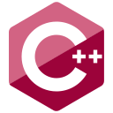

More than developer - I create with passion
Certificates
CISCO IT Essentials
CISCO course that covers IT skills, including hardware, operating systems, networking, security principles, and troubleshooting techniques.
Read moreCISCO Introduction to Cybersecurity
Provides an overview of cybersecurity concepts, threats, defense methods, and career insights.
Read moreCISCO Networking Academy Learn-A-Thon 2023
Focuses on accelerated learning through workshops, practical challenges, and collaboration on networking and other
Read moreProjekty
HarmoniaUI

UI library for Godot to extend the UI possibilities and simplify creation. Allows for a dynamic UI, events, animations. Based on verified web solutions.
Technology: C++, Godot
An attempt of creating a more comfortable and elastic solution to UI that's intuitive for web users.
Check on GithubBinPack
Binary serializer for C#. Supports primitives, arrays with many dimensions, classes and special. It's structurized.
Mastervault
MasterVault is an offline password manager designed to securely store and organize user credentials. Unlike online password managers, MasterVault data remains completely local to your device, meaning it does not rely on cloud services or internet connectivity.
Technology: Rust
Desire to create a local password manager for easy and fast use, but also a safe storage of passwords.
Check on GithubHydrateMe
App designed to help users track their water intake and encourage better hydration habits. Measures and records daily water consumption, providing users with timely reminders and hydration goals.
Technologia: Java, Android
Trial of Java and Android studio to create a useful application tracking users hydration.
Check on GithubWho am I
I am a passionate creative and technical professional specializing in coding, design, and development. With expertise in C#, JavaScript, Python, and more, I focus on creating functional and user-friendly applications. Always curious and eager to learn, I continuously explore new technologies and frameworks.
I love creating programs and playing around with different tools, besides that I like playing strategic games like EU4, CK3, Civ6 (all which are very addictive once you just start). I enjoy tinkering with different stuff like wood, leather, electronics, sewing and other
My hobbies
Programming Languages/Technologies:
-
C#
I have done plenty of projects in C#, that includes working with C# on Unity games, and on Godot games. I made libraries like BinPack (serializer) using C# and many other smaller console apps. I often use it to tinker with things.
-
C++
One of the most recent languages I have learned, I used it to develop HarmoniaUI - a New UI System for Godot (a bit like websites). I would love to work with it more, I very much like it.
-
Javascript/Typescript
Mostly used this language for scripts on websites and backend servers, it's a very universal language and can be used to develop countless things. I used TypeScript in a quite big website project which included a Database, Front-End server, Back-End server, nginx web server for managing all servers.
-
Python
Tinkering and other, I don't really use this language for big/complex projects. I used it for short projects, discord bot and other.